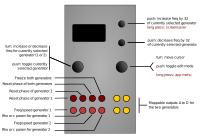

Low-rents

| I/O | Function |
|---|---|
| TR1 | Reset phase of generator 1 |
| TR2 | Reset phase of generator 2 |
| TR3 | Rest phase of both generators |
| TR4 | Freeze (both generators stop in their tracks and hold current value while TR4 is high) |
| CV1 | Frequency/speed of generator 1 |
| CV2 | Rho or c parameter for generator 1 |
| CV3 | Frequency/speed of generator 2 |
| CV4 | Rho or c parameter for generator 2 |
| A, B, C, D | Mappable outputs from the two generators (see table below) |
Controls
| Control | Function |
|---|---|
| Left encoder (turn) | Increase or decrease frequency of currently selected generator (1 or 2) |
| Left encoder (press) | Toggle currently selected generator frequency control |
| Right encoder (turn) | Navigation mode: move up and down through the menu items. Edit mode: increase or decrease the value being edited. |
| Right encoder (press) | Toggle between menu navigation (selection) mode and value editing mode |
| Right encoder (long press) | App selection menu |
| Up button (long press) | invoke screensaver |
| Up button (press) | Increment frequency of currently selected generator by 32 |
| Down button (press) | Decrement frequency of currently selected generator by 32 |
Settings
| Setting | Meaning |
|---|---|
Freq 1 |
Frequency/speed of generator 1, range is 0-255 |
Freq 2 |
Frequency/speed of generator 2, range is 0-255 |
Rho/c 1 |
Rho (for Lorenz attractor) or c (for the Rössler attractor) parameters for generator 1 |
Rho/c 2 |
Rho (for Lorenz attractor) or c (for the Rössler attractor) parameters for generator 2 |
LFreq 1 Rng |
frequency/speed range of Lorenz and Rössler generator 1, ranges from ‘sloth’ to ‘fast’. |
LFreq 2 Rng |
frequency/speed range of Lorenz and Rössler generator 2, ranges from ‘sloth’ to ‘fast’. |
out A |
output mapping for output A. Available choices shown in the table below. |
out B |
output mapping for output B. Available choices shown in the table below. |
out C |
output mapping for output C. Available choices shown in the table below. |
out D |
output mapping for output D. Available choices shown in the table below. |
| Output mapping value | Meaning |
|---|---|
Lx1 |
Generator 1 Lorenz attractor x value |
Ly1 |
Generator 1 Lorenz attractor y value |
Lz1 |
Generator 1 Lorenz attractor z value |
Lx2 |
Generator 2 Lorenz attractor x value |
Ly2 |
Generator 2 Lorenz attractor y value |
Lz2 |
Generator 2 Lorenz attractor z value |
Rx1 |
Generator 1 Rössler attractor x value |
Ry1 |
Generator 1 Rössler attractor y value |
Rz1 |
Generator 1 Rössler attractor z value |
Rx2 |
Generator 2 Rössler attractor x value |
Ry2 |
Generator 2 Rössler attractor y value |
Rz2 |
Generator 2 Rössler attractor z value |
Lx1+Rx1 |
Sum of Generator 1 Lorenz attractor x value and Generator 1 Rössler attractor x value |
Lx1+Rz1 |
Sum of Generator 1 Lorenz attractor x value and Generator 1 Rössler attractor z value |
Lx1+Ly2 |
Sum of Generator 1 Lorenz attractor x value and Generator 2 Lorenz attractor y value |
Lx1+Lz2 |
Sum of Generator 1 Lorenz attractor x value and Generator 2 Lorenz attractor z value |
Lx1+Rx2 |
Sum of Generator 1 Lorenz attractor x value and Generator 2 Rössler attractor x value |
Lx1+Rz2 |
Sum of Generator 1 Lorenz attractor x value and Generator 2 Rössler attractor z value |
Lx1xLy1 |
Bit-wise XOR of Generator 1 Lorenz attractor x value and Generator 1 Lorenz attractor y value |
Lx1xLx2 |
Bit-wise XOR of Generator 1 Lorenz attractor x value and Generator 2 Lorenz attractor x value |
Lx1xRx1 |
Bit-wise XOR of Generator 1 Lorenz attractor x value and Generator 1 Rössler attractor x value |
Lx1xRx2 |
Bit-wise XOR of Generator 1 Lorenz attractor x value and Generator 2 Rössler attractor x value |
Low-rents is a port of the Lorenz attractor modulation generator from the “Easter egg” in the Mutable Instruments Streams module, to which Rössler attractors have been added.
Two independent function generators are provided (referred to here as Generator 1 and Generator 2), with each generator calculating both the Lorenz and Rössler functions simultaneously, using the same phase accumulator, but with the rate/speed of each generator independently settable. Both the Lorenz and the Rössler functions output three values (x, y & z), and various combinations of these can be mapped to the four output channels. The chaotic strange attractors work best as slow modulation functions.
Note that the output voltage range of the o_C module is asymmetrical (about -3V to +6V) — because it was designed to process pitch CVs. Therefore the output of the Low-rents app is not centred about 0V.
The Rho and c parameters for the Lorenz and Rössler attractors respectively determine the degree of variability in the chaotic generator system. Note that the values have been constrained so that the functions do not collapse, but some combinations of extreme settings may cause the generator functions to collapse completely. If this happens, change the Rho/c setting and send a rest pulse to the relevant trigger input to reset the function generator.
Screensaver display
The screensaver show the A and B outputs in a vectorscope (X/Y) display on the left half of the screen, and the C and D outputs as a vectorscope display on the right half of the screen.
Tips
If you have an oscilloscope capable of displaying X/Y (vectorscope) signals, try patching pairs of the x, y and z outputs from either type of generator into it to observe the classic strange attractor patterns.